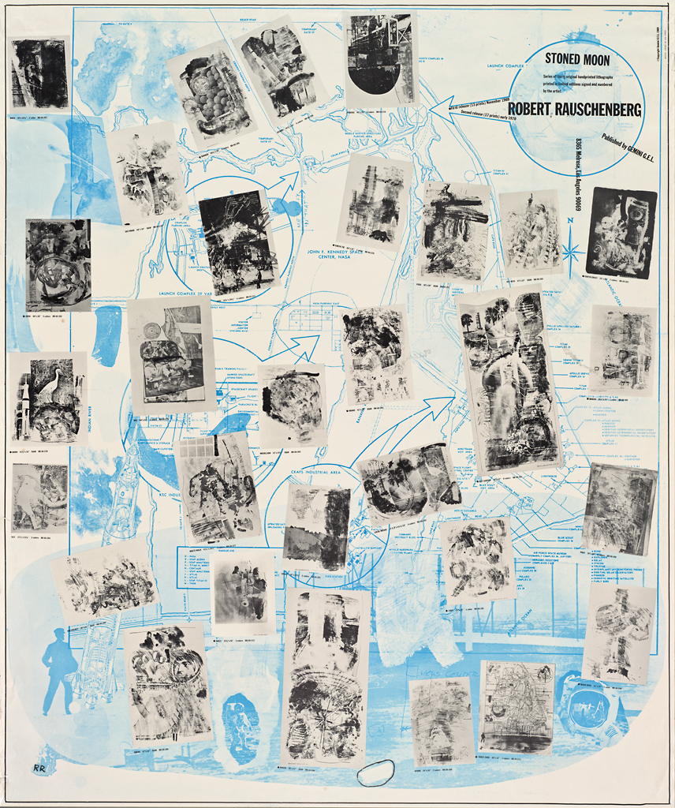

Stoned Moon
In July 1969, Robert Rauschenberg was invited by the National Aeronautics and Space Administration (NASA) to Cape Canaveral, Florida (then known as Cape Kennedy), to witness the launch of the historic Apollo 11 mission. Asked by the NASA Art Program to commemorate the first manned spaceflight to the moon, Rauschenberg enjoyed unrestricted access at NASA’s Florida facilities. He roamed the buildings and adjacent landscape, met with astronauts and other personnel, and was granted access to official NASA photographs and technical documents. This trip profoundly impacted the artist, who came away from the experience energized and with a renewed sense of optimism after having been deeply disillusioned for several years by the course of the Vietnam War and the growing social unrest in the United States.
After the launch, Rauschenberg began work on Stoned Moon (1969–70), a series of thirty-four lithographs that juxtapose hand-drawn passages with imagery that pairs the lush Florida landscape with the crisp industrial aesthetic of the space race. (SFMOMA holds twenty-nine of these prints.) Created in close collaboration with the master printers at Los Angeles–based print studio Gemini G.E.L., the Stoned Moon works are alternately colorful and subdued, and they range in size from just over two feet to more than seven feet in height. The largest and most complex, Sky Garden, represents an extraordinary technical achievement in printmaking, requiring two lithographic stones, four aluminum plates, and a silkscreen to produce the scale and visual effects the artist sought. At eighty-nine inches in height, Sky Garden was the largest hand-pulled lithograph ever created when it was printed in 1969.
Mind-boggling in scale, visual variety, and artistic ambition, Rauschenberg’s Stoned Moon portfolio resonates with the sensory overload of the Apollo launch experience. The individual prints in the series are filled with scenes of astronauts, space suits, complex machinery, and various regional ephemera (tourist maps, orange crate labels, etc.), emphasizing the interconnectedness of nature, mankind, and the astonishing scientific and technological achievements of the space program.